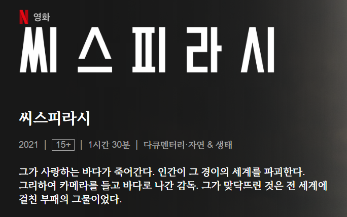

TV
저는 TV와 모바일 기기를 통해 다양한 프로그램을 봅니다.
아래는 제가 좋아하는 프로그램들입니다. 학우 여러분께도 꼭 추천드리고 싶습니다.
네셔널 지오그래피
저는 네셔널 지오그래피의 다양한 영상을 TV 혹은 유튜브로 보는 것을 좋아합니다.
동물에 관한 이야기, 인명구조에 관한 이야기, 버뮤다 삼각지대등 신비한 곳을 탐험하는 이야기 등이 있습니다.
저는 아래 영상을 가장 추천해드리고 싶습니다.
넷플릭스의 다양한 다큐
넷플릭스에는 다양한 다큐들이 있습니다. 주제도 인문, 동물, 기이한 현상, 용의자 추적등 다양하게 존재합니다.
저는 최근 '씨스피라시' 라는 어업과 환경파괴의 밀접함을 담은 다큐를 보았고 이를 매우 추천하고 싶습니다.
만약 관심이 있으시다면 아래 이미지를 눌러주세요. 넷플릭스 소개 페이지로 이동합니다.

Recommend me
저는 다양한 장르의 tv프로그램(혹은 유튜브 등 그 외 영상등)들을 보는 것을 좋아합니다.
여러분이 좋아하는 영상은 무엇인가요? 저에게 추천해주세요.